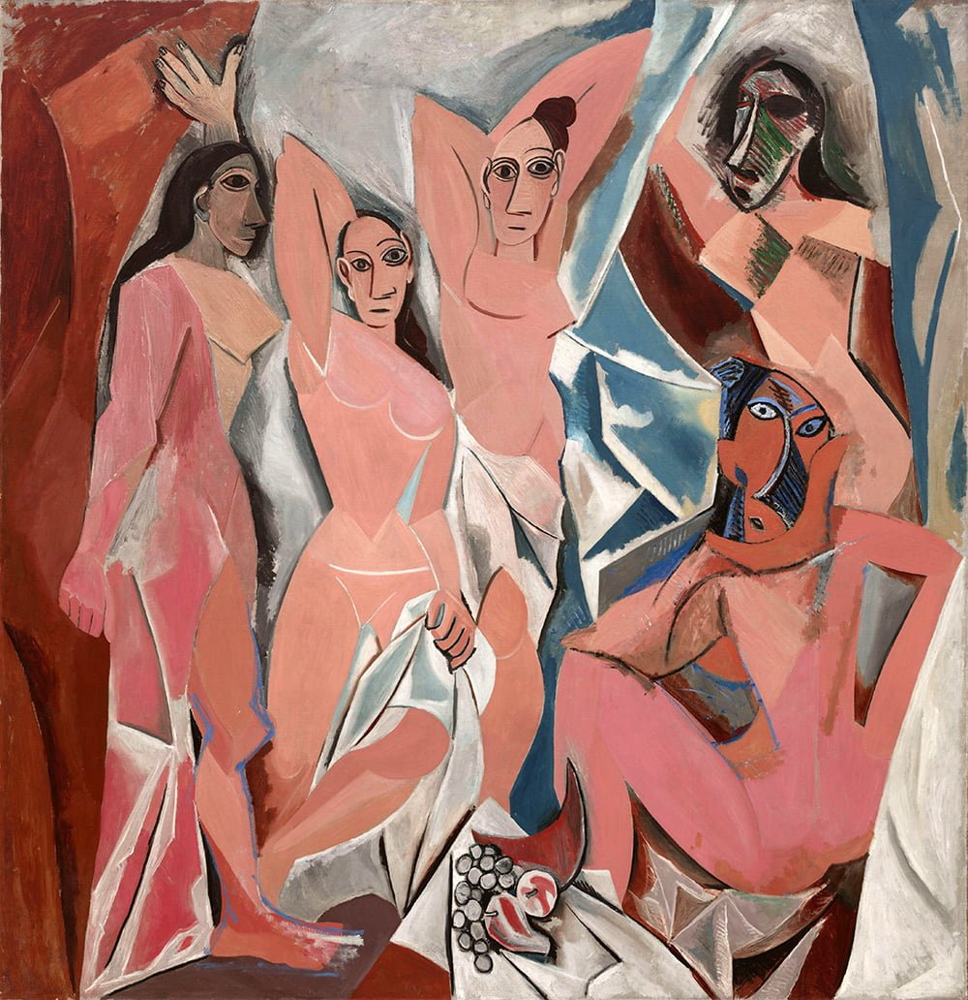
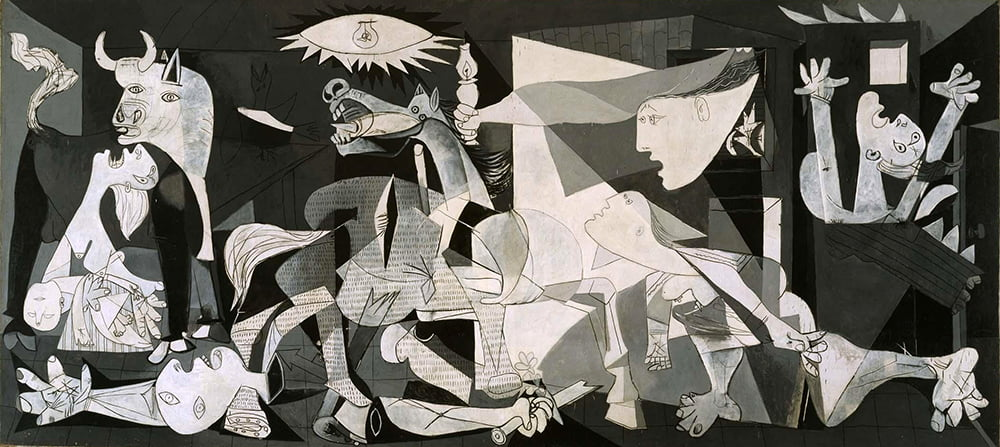
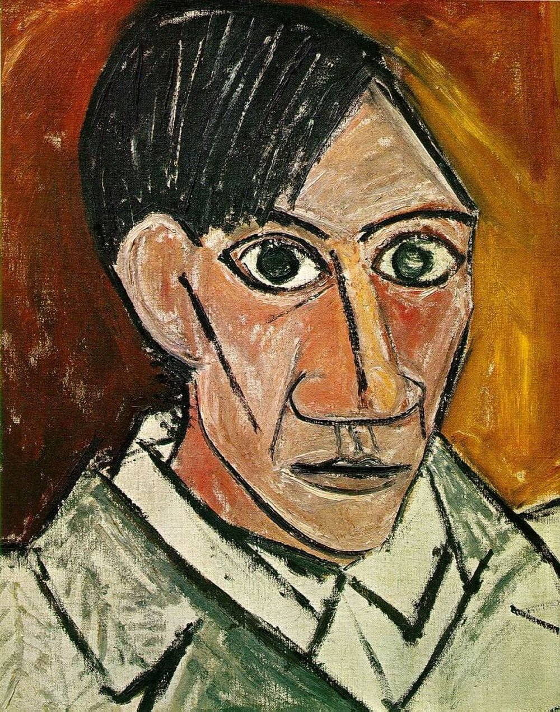
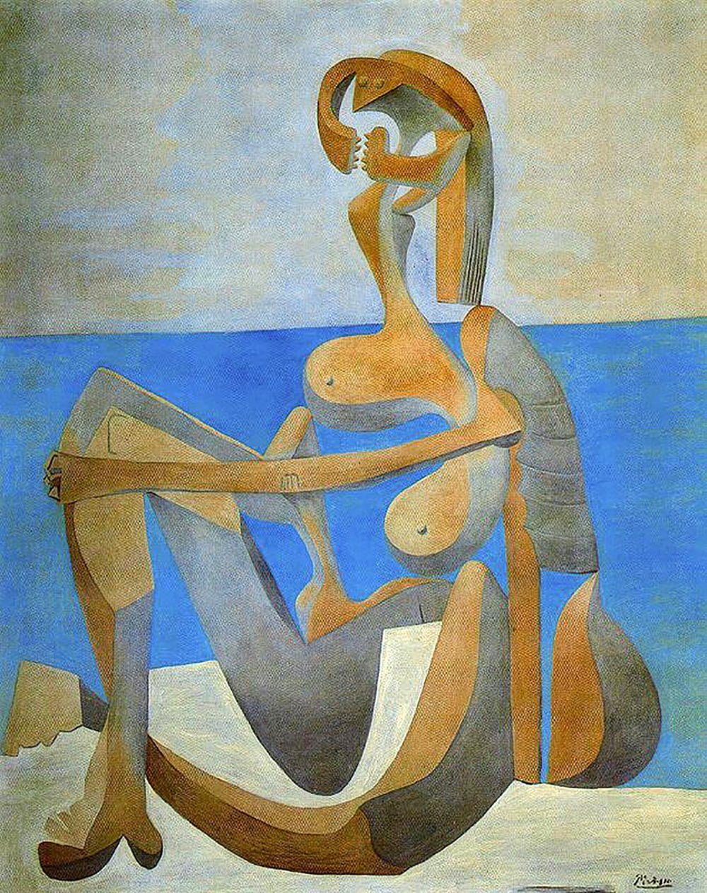
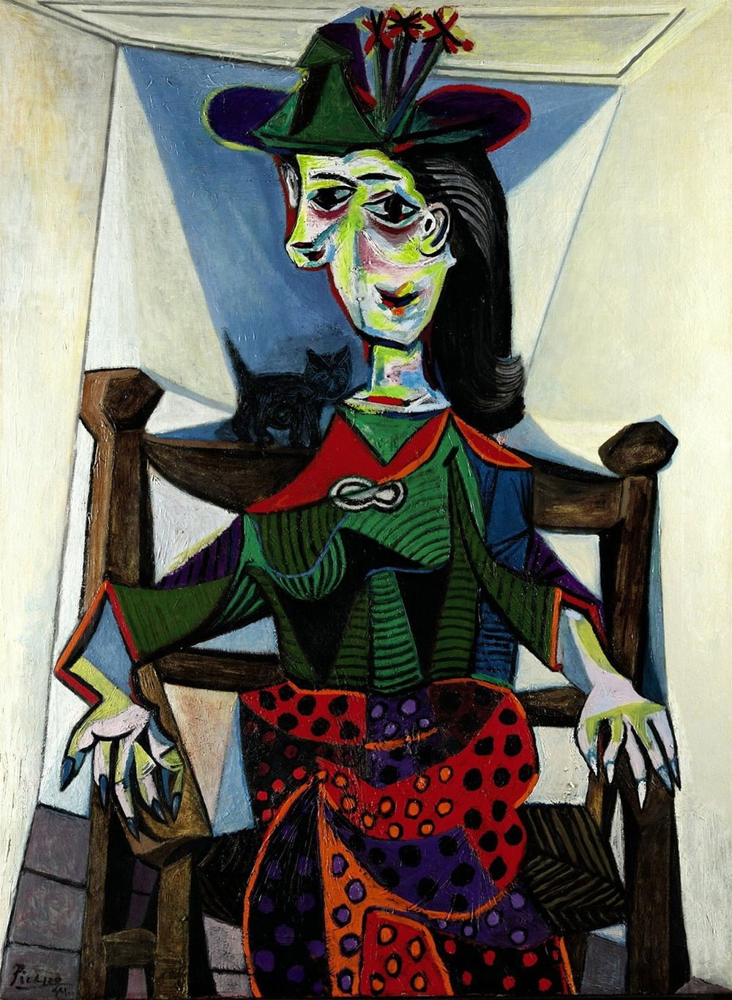
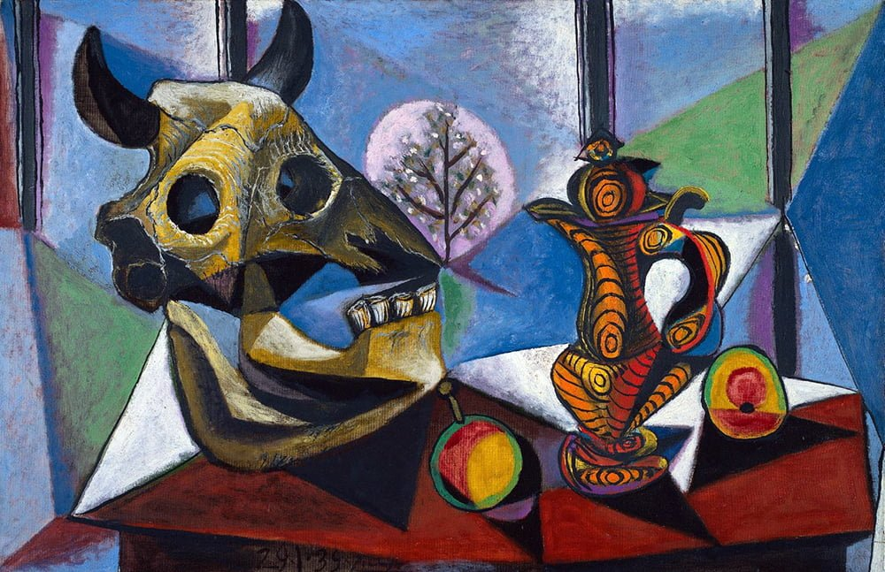
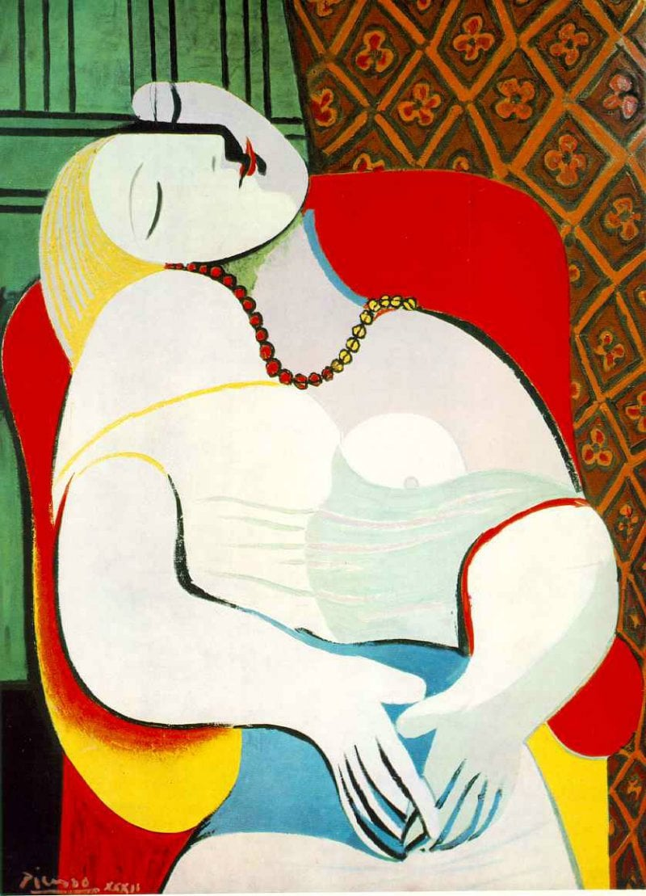
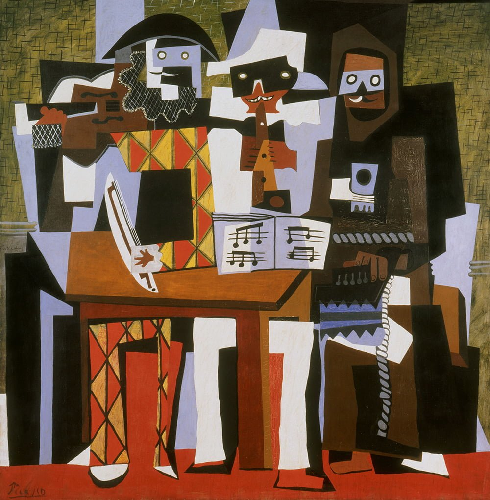

| PIC | Título da Obra |
|---|---|
|  | 1. Les Demoiselles d'Avignon (1907) |
|  | 2. Guernica (1937) |
 |
3. A Vida (1903) |
|  | 4. Autorretrato (1907) |
|  | 5. Banhista Sentada (1930)) |
|  | 6. Dora Maar com Gato (1937) |
| 7. Maternidade (1901)) | |
|  | 8. Natureza-Morta Com Crânios de Touros (1942) |
|  | 9. O Sonho (1932 |
|  | 10. Three Musicians (1921) |